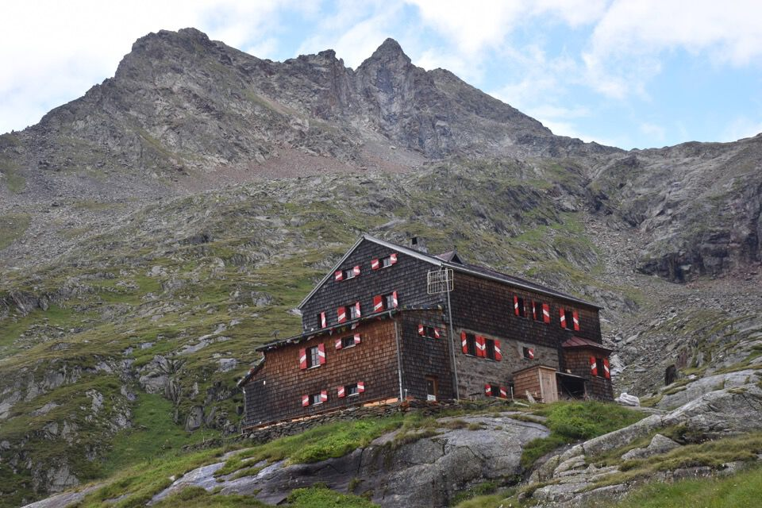
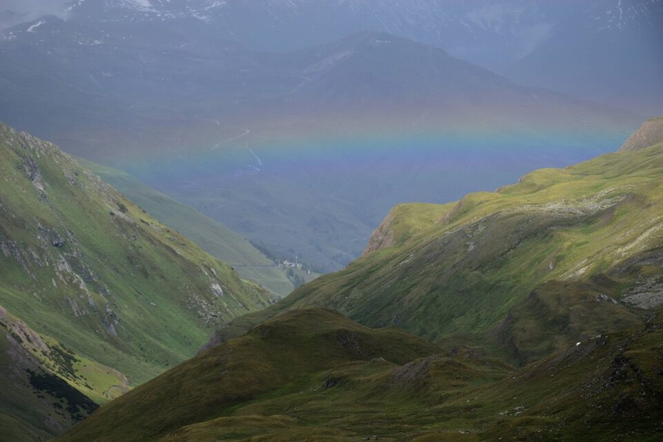
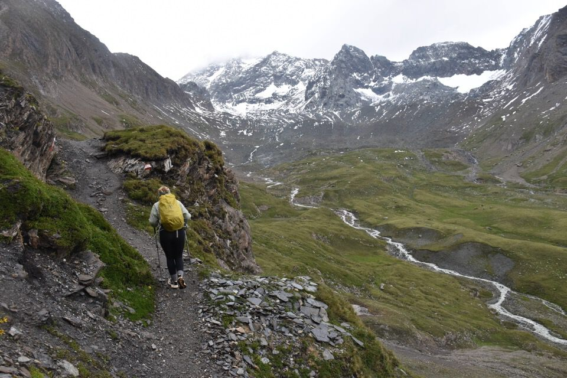

Splendido anello di tre giorni negli Alti Tauri, immersivo e dai panorami molto belli, questi forse piú simili alle highland scozzesi che non ai monti a cui sono abituato.
Con un po' di ricerche ho ideato questo itinerario:
- Salita al rifugio Elberfelderhütte percorrendo la lunga valle di Gößnitz;
- Dall'Elberfelderhütte salita al passo Kesselkeessattel, toccata e fuga sulla cima del Böses Weibl, discesa al Peischlachtörl, poi lungo traverso fino al rifugio Salmhütte passando per il rifugio Glorerhütte;
- Ritorno ad Heiligenblut seguendo il sentiero alto che valica la Stockerscharte per scendere alla diga del lago di Margaritzen.
Partiamo da poco dopo il campeggio di Heiligenblut: parcheggio gratis, bingo!

In realtà potevamo parcheggiare piú avanti, pazienza, percorriamo anche il sentiero «Natura Mystica».
Una quantità d'acqua impressionante, mostruosa, dappertutto: è la cosa che piú mi ha colpito di questo viaggio.
C'inoltriamo nella valle di Gößnitz: qui vista all'indietro verso il fondovalle, sembra attaccato ma c'è voluta piú di un'ora per una ripidissima strada forestale!
Bellissimi scorci, credo che questo sia il Karlkamp (3114, gruppo dello Schober).
Non si fa...
Nell'alta valle di Gößnitz.

Eccoci finalmente in vista del rifugio Elberfelderhütte, sembra un miraggio dopo tutte queste ore!
Salto temporale: eccoci alla mattina dopo, tempo bellissimo.
Molto bello il Roter Knopf (3281).
Già vediamo il percorso che ci poterà alla Kesselkeessattel.
Salutiamo la bella valle di Gößnitz.
Sempre il Roter Knopf.

Dalla Kesselkeessattel faccio un salto velocissimo sul Böses Weibl, il cimotto (beh, 3119!) a dx.
Il paese che si vede dovrebbe essere Kals am Großglockner.
La valle che abbiamo percorso partendo dal Elberfelderhütte.
Scendiamo giú al Peischlachtörl dove alcune marmotte ci danno spettacolo.
Dal Peischlachtörl la pioggia ci attanaglia...
...ma arriviamo sani e salvi al Glorerhütte.
«Ma per quale diavolo di motivo abbiamo (ho) prenotato al rifugio Salmhütte anziché in questo!?»
Ecco laggiú la Salmhütte, a poco piú di un'ora di distanza.
 Ai piedi del Großglockner, ambiente magnifico.
Eccoci finalmente al Salmhütte: ceneremo come dei re!
Eccoci in partenza al terzo e ultimo giorno.
Il sentiero, che traversa in quota a mezza costa, è bellissimo.
Finalmente sulla Stockerscharte: panorama magnifico!
Verso i ghiacciai del Großglockner.
Il lago di Margaritzen.

Finalmente vedo da vicino il mitico Großglockner.
Dopo una lunga pausa iniziamo a scendere verso il lago.
Laggiú il Hoher Sonnblick (3106, gruppo del Goldberg).
La via del rientro ad Heiligenblut è davvero magnifica: prima un bel sentierino, poi strada forestale.